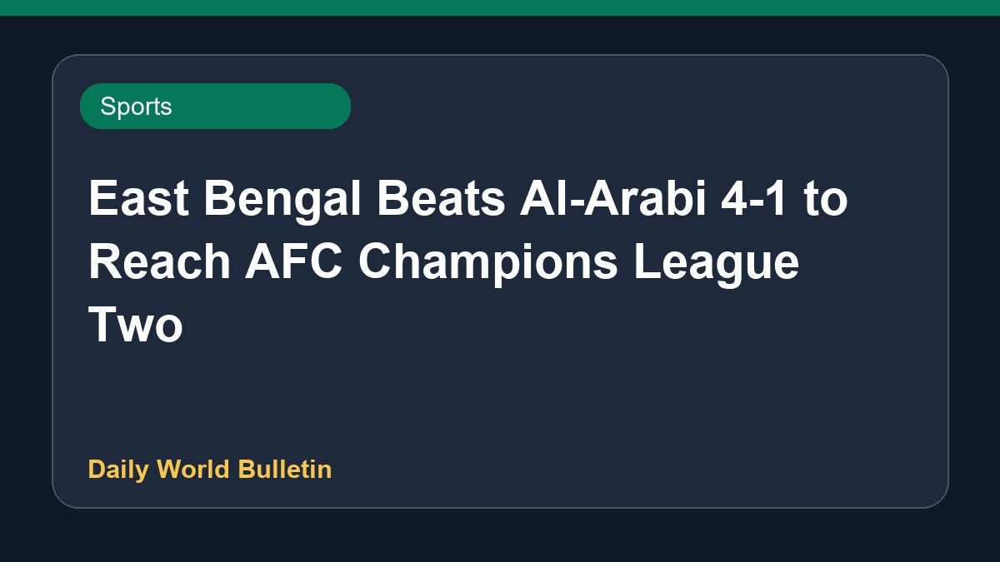

East Bengal Beats Al-Arabi 4-1 to Reach AFC Champions League Two

East Bengal secured a remarkable 4-1 comeback victory against Al-Arabi in the AFC Champions League Two preliminary knockout match, successfully advancing to the group stage. Despite facing initial challenges and a lack of squad alternatives, the Red and Gold Brigade displayed a sensational performance to turn the game around after conceding first. This decisive win marks a major milestone for the team in continental competition, as reported by sports sources.
Original source: Sports News Sources
East Bengal vs Al-Arabi Highlights, AFC Champions League Two Preliminary Knockout: EBFC 4-1 AASC; Red and Gold Brigade advances - Sportstar ↗
East Bengal vs Al-Arabi Highlights, AFC Champions League Two Preliminary Knockout: EBFC 4-1 AASC; Red and Gold Brigade advances - Sportstar ↗